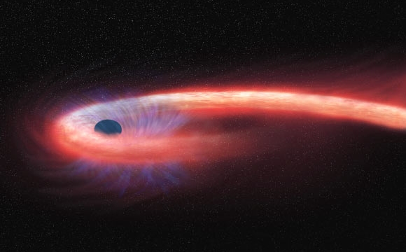

Tidal disruption events

When a star wanders too close to a supermassive black hole (SMBH), it is torn apart by the tidal forces of the black hole. Such an event results in debris around an SMBH which may accrete onto the SMBH while forming an accretion disk. The interaction between a star and the SMBH is violent and emits bright flares across the electromagnetic spectrum, mainly observed in X-ray and UV/Optical surveys. These events are called Tidal Disruption Events (TDEs) and their observed properties are highly dependent on the SMBH's mass and spin and orbital properties of the star that interacts with the SMBH. Some of the observational features that depend on these properties are - Lense-Thirring precession, bolometric radiative efficiency, Bardeen-Petterson effect, relativistic jets, quasi-periodic oscillations, etc.
TDEs are multi-messenger transients, responsible for electromagnetic flares along with potentially launching relativistic jets, high-energy neutrinos, cosmic rays, and are proposed as gravitational wave sources. They are unique in the sense that they last for weeks to years and can serve as a probe to study quiescent SMBH growth. They can potentially answer our questions about SMBH spins and masses distributions and dynamics of stars in the densest galactic regions.
My Research on TDEs
My research primarily focuses on the black hole spin implications on TDEs. In my *first* publication, we discussed how the axisymmetric Kerr metric (which describes spacetime around a spinning SMBH) changes the conditions for disruption of a solar star as compared to spherically symmetric Schwarzschild metric (non-spinning SMBH). This introduces an important parameter: the inclination angle of the stellar orbit with respect to the spin of the SMBH. We then calculated inclination biases and found that the prograde orbits (orbits in the direction of the SMBH spin) are more likely to get disrupted as compared to the retrograde orbits (orbits opposite to the SMBH spin) (reaffirming the results of previous studies). But depending on the diffusion efficiency of the refilling processes (two-body scattering), which refills the stellar orbits that are disrupted, the prograde bias can be reduced or even reversed. We then calculated inclination biases for the extremal cases of diffusion efficiency. As our last result, we calculated the total disruption rate of stars around SMBHs and found that the diffusion efficiency assumptions can change the total disruption rate substantially depending on the SMBH mass and spin. For more details, you can find the published paper here "Distribution of orbital inclinations for tidal disruption events by Kerr black holes", PRD (2024, February - Tamanjyot Singh and Michael Kesden) or you can find the arXiv version here arXiv:2306.08054.
Future Work
I am currently preparing to work on a follow-up paper to discuss the implications of these results on the observed properties of TDEs. I am interested in studying the effects of the SMBH spin and stellar inclinations on the TDE accretion disk properties, relativistic jets launched during TDEs, and other observational features of TDEs.